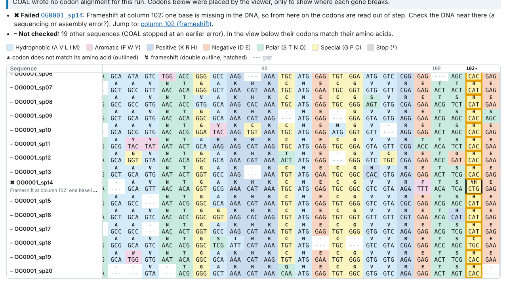

Put the DNA back under your protein alignment.
COAL takes a protein alignment and the DNA of the same genes and writes the codon alignment you need for dN/dS and DNA trees. When a gene doesn't fit, it tells you which one and why, in plain words. Free, open source, and it runs on your own computer.
Installer for Windows 10 and 11, 64-bit. Installs for you only, no administrator rights. It isn't code-signed yet, so Windows will ask you to confirm.
Windows blocks it with Smart App Control
?
Install with pip instead.
Install with pip
For macOS and Linux (and Windows). Needs Python 3.10 or newer; run it inside a virtual environment, as in the macOS and Linux steps.
python3 -m pip install "coal[gui] @ https://github.com/plumat-coal/COAL/releases/latest/download/coal_src.tar.gz"
Show the download for , or .
Other downloads (portable Windows zip, source, checksums)
All downloads
These links always fetch the newest release. Older versions and release notes are on the releases page.
| File | What it is |
|---|---|
| COAL-Setup-windows-x64.exe | Windows installer (Windows 10 and 11, 64-bit). Recommended for Windows. |
| COAL-windows-x64.zip | Windows portable app: unzip anywhere and run COAL\COAL.exe. Nothing is installed. |
| coal_src.tar.gz | Python source package, used by the pip command above (any system with Python 3.10+). |
| SHA256SUMS.txt | SHA-256 checksums of every file, to check a download. |
| Python wheel | On the release page (its file name contains the version number, so it has no fixed link). |
COAL is not on PyPI: a plain pip install coal does not install this project. Use the command above.
Install
Jump to Windows, macOS or Linux.
Windows (your system)
- Download COAL-Setup-windows-x64.exe.
- Edge may say the file
isn't commonly downloaded
. Click … next to the message, then Keep, then Show more and Keep anyway. - Open the file. Windows shows a blue box,
Windows protected your PC
. Click More info. Check that it namesCOAL-Setup-windows-x64.exeand saysPublisher: Unknown publisher
, then click Run anyway.Windows protected your PC
Microsoft Defender SmartScreen prevented an unrecognized app from starting. Running this app might put your PC at risk.
More info
Windows protected your PC
Microsoft Defender SmartScreen prevented an unrecognized app from starting. Running this app might put your PC at risk.
A drawing of the two screens (not a screenshot; the wording can differ a little between Windows versions). Left: what appears first. Right: after More info. Why: COAL doesn't have a code-signing certificate yet, so Windows can't name the publisher. You can check the download against the published checksum first.
- Choose whether you want a desktop shortcut and an
Open with
entry for .fasta and .aln files (both optional; COAL never becomes your default program). Click Install. COAL installs in your own user folder,%LOCALAPPDATA%\Programs\COAL. - Start COAL from the Start menu. The first start can take ten seconds or so. Drop your protein alignment and DNA onto the window, or click Try an example.
If Smart App Control
blocked COAL
On Windows 11, Smart App Control blocks apps that aren't signed, with no Run anyway
button and no
way to allow just one app. Turning it off for COAL isn't a good trade (on many Windows versions it can't be
turned back on without reinstalling Windows). Install with pip instead, in PowerShell, with Python 3.10 or
newer from python.org:
py -m venv $HOME\coal-env
& $HOME\coal-env\Scripts\python -m pip install "coal[gui] @ https://github.com/plumat-coal/COAL/releases/latest/download/coal_src.tar.gz"
& $HOME\coal-env\Scripts\python -m coal_app
The last line starts the app; open http://127.0.0.1:7860 in your browser.
Portable instead of installed: unzip COAL-windows-x64.zip
and run COAL\COAL.exe (Windows shows the same confirmation). On a university or company
laptop, IT policy may block either; COAL only listens on this computer (127.0.0.1).
macOS (your system)
- Open Terminal and check your Python:
python3 --version. You need 3.10 or newer. If it's older or missing, install the current Python from python.org. - Make a separate environment for COAL (so it can't clash with other software):
python3 -m venv ~/coal-env - Install COAL with its app:
~/coal-env/bin/python -m pip install "coal[gui] @ https://github.com/plumat-coal/COAL/releases/latest/download/coal_src.tar.gz" - Start the app, then open
http://127.0.0.1:7860in your browser. Stop it with Ctrl+C in Terminal.~/coal-env/bin/coal-gui
Linux (your system)
- Check your Python:
python3 --version(3.10 or newer). On Debian and Ubuntu you may also needsudo apt install python3-venv. - Make a separate environment and install COAL into it (recent Debian, Ubuntu and Fedora refuse
pip installoutside one):python3 -m venv ~/coal-env ~/coal-env/bin/python -m pip install "coal[gui] @ https://github.com/plumat-coal/COAL/releases/latest/download/coal_src.tar.gz" - Start the app with
~/coal-env/bin/coal-guiand openhttp://127.0.0.1:7860. On a server, use the command line instead (below).
Command line and pipelines
The pip install also gives you the coal command (in ~/coal-env/bin, or
$HOME\coal-env\Scripts on Windows):
coal protein.aln.fasta dna.fasta -o codon.aln.fasta
coal protein.aln.fasta dna.fasta -codontable 2 -nogap -o codon.aln.fasta
coal --helpIt accepts PAL2NAL's options, and a pal2nal command that takes PAL2NAL's command line is
included as a drop-in. Unlike PAL2NAL, COAL exits with a non-zero status when something is wrong, so a
pipeline stops instead of carrying on with a bad alignment. For the command line alone, write coal
instead of coal[gui] in the install command: it then installs nothing else.
Updating: run the same install command again; it fetches the newest release.
Check a download
Every release has a SHA256SUMS.txt file. Put it in the same folder as your download and compare.
Windows (PowerShell)
Get-FileHash .\COAL-Setup-windows-x64.exe -Algorithm SHA256The long hex string must equal the one on the COAL-Setup-windows-x64.exe line of
SHA256SUMS.txt (upper or lower case doesn't matter).
Linux
sha256sum -c --ignore-missing SHA256SUMS.txtEach file you downloaded must say OK.
macOS
shasum -a 256 coal_src.tar.gzCompare with the coal_src.tar.gz line of SHA256SUMS.txt.
Why COAL
PAL2NAL has done this job for twenty years. COAL does the same job, faster, and explains itself.
- Checked against PAL2NAL
- Tested against PAL2NAL version 14's own output: 165 checks on 38 input cases and every FASTA option. The output is byte-identical in 147 checks; the rest are inputs both tools reject or documented, deliberate differences.
- Faster on real-sized data
- Measured on one Windows 11 laptop, synthetic data, median of 3 runs: 100 genes of 10,000 codons took PAL2NAL 24.5 s and COAL 0.207 s (118.6×). 10,000 genes of 500 codons: 24.7 s against 0.864 s. For tiny inputs both take about 0.05 s, so there's no gain there.
- Large inputs in little memory
- Measured on the same laptop: half a million genes (974 MB of input) in 9.8 s with 4 processes; one process peaked at 131 MB of memory.
- Tells you what's wrong
- A gene that doesn't fit gets a sentence, not a cryptic line: a frameshift and roughly where, IDs that don't match, or mitochondrial genes run with the standard genetic code (with a one-click re-run). The app also writes a methods paragraph for your paper.
- Your data stays on your computer
- The app runs locally and works offline. Pure Python, MIT licence. AI assistants can use it too, through MCP.

one broken geneexample: COAL names the gene and the column where a DNA letter is missing. Watch the 20-second explainer of what a codon alignment is.
Benchmark details, machine and raw data: the README.
Docs, source and help
- README: options, inputs, differences from PAL2NAL, benchmarks.
- SKILL.md: instructions for AI agents using COAL.
- Source code on GitHub.
- Report a problem or ask a question (GitHub Issues). Please include
the COAL version (
coal --version), your system, and, if you can, a small file that shows the problem. - MIT licence: free to use, change and share, also commercially.
How to cite
If COAL helped your work, please cite the version you used:
COAL contributors (2026). COAL: fast codon alignment from protein alignments and coding DNA. https://github.com/plumat-coal/COAL. DOI: [placeholder: Zenodo DOI not yet assigned]
There is no DOI yet. Until there is one, cite the repository and the version number
(coal --version).